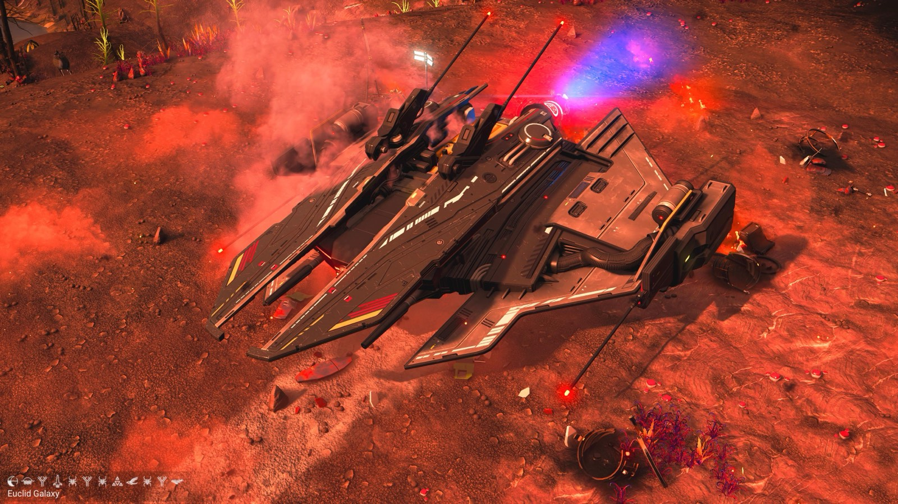
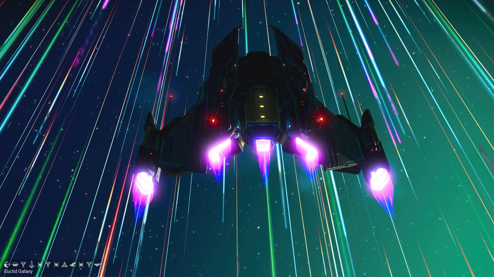
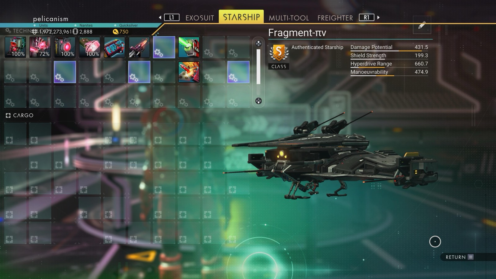

Waypoint 5
Ogawar VII



- Distance from core
- 1,149,268 LY
- Jump from previous
- 1,994 LY
- Planet coordinates
- +32.04, -1.47
- Ship as found
- B-class, 37+26 slots
- S-class ship
- Fragment-πν
- Damage
- 431.5
- Shield
- 199.3
- Hyperdrive
- 660.7
- Manoeuvrability
- 474.9